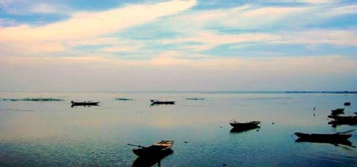

水处理30个常用专业名称全解析，你知道几个？

一、化学水处理 1、地表水；是指存在于地壳表面,暴露于大气的水,是河流、冰川、湖泊、沼泽四种水体的总称,亦称“陆地水”。 2、地下水；是贮存于包气带（包气带是指位于地球表面以下、潜水面以上的地质介质）以下地层空隙,包括岩石孔隙、裂隙和溶洞之中的水.地下水存在于地壳岩石裂缝或土壤空隙中。 3、原水；是指采集于自然界，包括并不仅限于地下水，水库水等自然界中能见到的水源的水，未经过任何人工的净化处理。 4、PH；表示溶液酸碱度的数值，pH=-lg[H+]即所含氢离子浓度的常用对数的负值。 5、总碱度；水中能与强酸发生中和作用的物质的总量。这类物质包括强碱、弱碱、强碱弱酸盐等。 6，酚酞碱度；就是用酚酞作指示剂所测得的碱度（滴定终点pH＝8.2～8.4）。 7、甲基橙碱度；就是以甲基橙作指示剂所测得的碱度（滴定终点pH＝3.1～4.4）。 8、总酸度；酸度指水中能与强碱发生中和作用的物质的总量，包括无机酸、有机酸、强酸弱碱盐等。 9、总硬度；在一般天然水中，主要是Ca2+和Mg2+，其它离子含量很少，通常以水中Ca2+和Mg2+的总含量称为水的总硬度。 10、暂时硬度；由于水中含有Ca(HCO3)2和Mg(HCO3)2而形成的硬度，经煮沸后可把硬度去掉，这种硬度称为碳酸盐硬度，亦称暂时硬度。 二、循环水处理 1、循环水；用水来冷却工艺介质的系统称作冷却水系统。 2、直流冷却水系统；冷却水仅仅通过换热设备一次，用过后水就被排放掉。 3、敞开式循环水；以水冷却移走工艺介质或换热设备所散发的热量，然后利用热水和空气直接接触时将一部分热水蒸发出去，而使大部分热水得到冷却后，再循环使用。 4、封闭式循环水系统；又称为密闭式循环冷却水系统。在此系统中，冷却水用过后不是马上排放掉，而是回收再用。 5、冷却塔；是用水作为循环冷却剂，从一系统中吸收热量排放至大气中，以降低水温的装置。分自然通风和机械通风两种冷却方式。 6、布水器；回水通过布水器均匀分布到填料上。 7、填料；回水经过填料形成水膜，增加与空气的接触面积。 8、收水器；回收部分蒸发水蒸汽中携带的液体水。 9、循环水量；指循环水系统上冷却塔的循环水量总和。n50保有水量：循环水系统内所有水容积的总和，等于水池容积及管道和水冷设备内水的容积总和。 10、补充水量；用来补充循环水系统中由于蒸发/排污/何飞溅的损失所需的水。 三、污水处理 1、生活污水；主要是人类生活中使用的各种厨房用水、洗涤用水和卫生间用水所产生的排放水，多为无毒的无机盐类，生活污水中含氮、磷、硫多，致病细菌多。 2、市政污水；排入城镇污水系统的污水的统称。载合流制排水系统中，还包括生产废水和截留的雨水。市政污水主要包括生活污水和工业污水,由城市排水管网汇集并输送到污水处理厂进行处理。 3、工业废水；是指工业生产过程中产生的废水、污水和废液，其中含有随水流失的工业生产用料、中间产物和产品以及生产过程中产生的污染物。 4、COD；化学需氧量，水体中能被氧化的物质在规定条件下进行化学氧化过程中所消耗氧化剂的量，以每升水样消耗氧的毫克数表示，通常记为COD。 5、BOD；地面水体中微生物分解有机物的过程消耗水中的溶解氧的量，称生化需氧量，通常记为BOD，常用单位为毫克/升。 6、BC比；表示水中污染物的可生化程度，0.1-0.25难生化，0.25-0.5可生化，＞0.5易生化。 7、TOC；指水体中溶解性和悬浮性有机物含碳的总量，反映水中氧化的有机化合物的含量，单位为ppm或ppb。 8、氨氮；是指水中以游离氨（NH3）和铵离子（NH4+）形式存在的氮。 9、有机氮；与碳结合的含氮物质的总称，如蛋白质、氨基酸、酰胺、尿素等。 10、凯氏氮；TKN，是指以基耶达（Kjeldahl)法测得的含氮量。它包括氨氮和在此条件下能转化为铵盐而被测定的有机氮化合物。